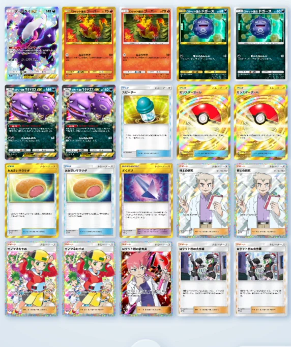

【ポケポケ】ロケット団のブーバーデッキ｜最大210ダメージの積み方と実戦5戦5勝の記録
結論：新パック「ロケット団の野望」で、いちばん組みやすくて、いちばん強いのはこのデッキでした。主役のロケット団のブーバーはワザ「なぶりやき」が10＋（相手が受けている特殊状態の数×50）。マタドガスexの特性でどく・やけど、ロケット団の大作戦でこんらんを乗せれば、それだけで160ダメージ。ターン終了時のどく・やけどとダークライexを足すと1ターンで最大210ダメージまで伸びます。ex1枚以外はレアリティも高くありません。実戦5戦は5勝0敗でした。
「新パックを引いたけどヤドキングが出なかった。今あるカードで組める強いデッキはないの？」——exが1枚あればいいデッキを探している人。そして「ロケット団の大作戦って自分もこんらんするけど、使っていいの？」で手が止まっている人。
2026年8月27日に、この構築でランダムマッチを5戦回した実プレイの記録です。抜粋なし・5試合とも丸ごと動画に入れてあります。カード名・ワザ名・特性の効果テキストはすべてゲーム画面と照合しました（どく・やけど・こんらんのようにゲーム内でひらがな表記のものは、ひらがなのまま書いています）。
実戦5戦の結果（5勝0敗）
まず数字から出します。同じ日・同じ構築で5戦して5勝0敗。しかもそのうち2戦はダークライexがバトル場に出てしまう事故スタートからの勝ちでした。
| 試合 | 相手 | 結果 | 内容 |
|---|---|---|---|
| 1試合目 | アローラキュウコン（水） | 勝ち | 先攻2ターン目に140ダメージ。どくバリのせいで相手が殴ることもできず、そのまま完勝 |
| 2試合目 | カメックス／プールリル（水） | 勝ち | ダークライex前スタート。こんらんにしてから逃げて立て直し、HP60のたねをブーバーで拾って勝ち |
| 3試合目 | タイレーツ＋化石（ひみつのコハク→プテラ／ラムパルド） | 勝ち | ここもダークライex前。長期戦になったが相手が先に切断。ラムパルドが早ければ危なかった |
| 4試合目 | リオル→メガルカリオex／カポエラー／エビワラー（闘） | 勝ち | どくバリでリオルを殴らせないのが刺さり、メガルカリオexは耐えられずに終了 |
| 5試合目 | ニューラ／マニューラex（悪） | 勝ち | 大作戦のウラで自分がこんらん→判定も失敗という最悪パターンを踏んだうえで、コイントスを拾って逆転 |
このデッキは特殊状態を乗せた時点でほぼ勝負が決まります。相手からすると「殴ればどくバリでどくになる、殴らなければ次のターンに160が飛んでくる」という二択になるので、動きようがない。実際1試合目と4試合目は、相手がほとんど何もできないまま終わりました。
デッキレシピ20枚
エネルギーは炎＋悪の2種類です。exはマタドガスexとダークライexだけで、残りは高レアリティを要求しません。

▲ 実際のデッキ画面（2026年8月27日時点）
| カテゴリ | カード | 枚数 | 役割 |
|---|---|---|---|
| ポケモン (7枚) | ロケット団のブーバー | 2 | アタッカー。ワザ「なぶりやき」10＋（特殊状態の数×50） |
| ロケット団のドガース | 2 | マタドガスexのたね。ワザ「ぎゃくふんしゃ」で自分から引っ込める | |
| ロケット団のマタドガスex | 2 | 特性「ボイラースモッグ」でどく＋やけど。ワザ「こんらんガス」60 | |
| ダークライex | 1 | 特性「ナイトメアオーラ」。悪エネをつけるたび相手に20ダメージ | |
| グッズ (6枚) | モンスターボール | 2 | たねポケモンサーチ |
| おおきいマラサダ | 2 | HP10回復＋特殊状態をランダムに1つ回復。自滅ケア | |
| スピーダー | 1 | にげるためのエネルギーを1個少なくする | |
| どくバリ（ポケモンのどうぐ） | 1 | 殴ってきたポケモンをどくにする。抑止力 | |
| サポート (7枚) | 博士の研究 | 2 | ドローソース計4枚 |
| モノマネむすめ | 2 | ||
| ロケット団の大作戦 | 2 | 相手をこんらんに。ウラで自分もこんらん | |
| ロケット団の研究員 | 1 | ウラが出るまでコイン。オモテの数だけロケット団ポケモンをサーチ | |
| 合計 | 20 | エネルギーは炎＋悪 | |
なぶりやきの計算式｜10＋（特殊状態の数×50）
まずここを間違えないでください。ロケット団のブーバーのワザ「なぶりやき」は、カードに書かれている打点が「10＋」です。対戦画面のワザ欄にはそのときの実効値（特殊状態を足した後の数字）が出るので、「60のワザ」だと思っていると計算が合わなくなります。
| 相手に乗っている特殊状態 | なぶりやきの打点 |
|---|---|
| なし | 10 |
| 1つ（こんらんだけ など） | 60 |
| 2つ（どく＋やけど） | 110 |
| 3つ（どく＋やけど＋こんらん） | 160 |
HP60のたねポケモンは、こんらんを1つ乗せるだけで落とせます。これが地味に強くて、実戦2試合目ではダークライex前という最悪のスタートから、この60ダメージで盤面を取り返しました。
210ダメージまでの積み方
「最大210」の内訳はこうです。なぶりやき1回のダメージではなく、1ターンに相手へ入る合計だと考えてください。
| 順番 | やること | 入るダメージ | 累計 |
|---|---|---|---|
| 1 | マタドガスexに進化してボイラースモッグ（どく＋やけど） | ― | ― |
| 2 | ロケット団の大作戦でこんらん | ― | ― |
| 3 | ブーバーでなぶりやき（特殊状態3つ） | 160 | 160 |
| 4 | ベンチのダークライexに悪エネをつける（ナイトメアオーラ） | 20 | 180 |
| 5 | ターン終了時のどく10＋やけど20 | 30 | 210 |
大作戦が手札に無くても、マタドガスexのどく＋やけどだけで110、そこにターン終了時の30が乗って140。実戦1試合目は先攻2ターン目にこの140が入って、そのまま押し切りました。210は上振れ、140が基本線だと思っておくと組みやすいです。
マタドガスexの特性はクリアベールを貫通する
このデッキの根っこはここです。ロケット団のマタドガスexのボイラースモッグは「特性」で、手札から出して進化させたときに1回使えて、相手のバトルポケモンをどくとやけどにします。
特殊状態を止めるカードとしてクリアベールがありますが、あれが防ぐのは「ワザの効果」です。特性は防げません。つまりクリアベールを持っている相手にも、どく・やけどはそのまま通ります。相手からすると対策札が刺さらないので、かなり理不尽に見えるはずです。
なお、マタドガスexにはワザ「こんらんガス」（60ダメージ・相手をこんらんにする）もあります。大作戦を引けていないときは、こちらでこんらんを乗せてからブーバーに引き継ぐ手もあります。
初手はどれが当たり？｜ブーバー前・ドガース前・ダークライex前
このデッキは初手に何が前に出るかで難易度がはっきり変わります。順位はこうです。
| 初手 | 評価 | 理由 |
|---|---|---|
| ロケット団のブーバー前 | ◎ 一番いい | そのまま「なぶりやき」を撃ち始められる |
| ロケット団のドガース前 | ○ 2番目 | マタドガスexに進化してどく＋やけどを入れられる |
| ダークライex前 | × 一番きつい | にげるためのエネルギーが重く、動き出せない |
たねポケモンを5枚入れているので、確率としてはそこまでダークライex前にはなりません。ただし実戦では5戦のうち2戦で起きました。こればかりは事故なので、起きた前提で立て直しの手順を持っておくのが現実的です。
ダークライex前になったときの立て直し
- 大作戦かこんらんガスで相手をこんらんにする（動きを止める）
- スピーダーを使って、軽くなったところで逃げてブーバーに交代
- ベンチに下がったダークライexに悪エネをつけて、ナイトメアオーラの20を毎回もらう
ダークライexはバトル場に置いておくと重いだけですが、ベンチに下がると毎ターン20ダメージを出す優秀な置物になります。「前に出てしまった」ではなく「早くベンチに帰す」と考えると気が楽です。
こんらんとねむりは重複しない｜大作戦→マラサダの順番
ここは知らないと事故ります。こんらんとねむりは重複しません。どちらか一方だけです。
そのため、たとえば相手のププリンなどで先にねむりにされている状態で、おおきいマラサダを先に使ってしまうと、そのあと大作戦を使ったときにこんらんが入ってしまう可能性があります。
①先に「ロケット団の大作戦」を使う（自分がこんらんになるかどうかを確定させる）→ ②おおきいマラサダで回復する。
この順番なら、ねむりでもこんらんでもマラサダの1回で片付きます。逆順は損をします。
正直な弱点：大作戦のウラで自滅する4分の1
いいことばかり書いてもしょうがないので、はっきり書きます。このデッキが負けるとしたら、ほぼ大作戦の自滅です。
ロケット団の大作戦は相手をこんらんにしたあと、コインを1回投げてウラなら自分のバトルポケモンもこんらんになります。そして自分がこんらんになると、ワザを使うときの判定にも失敗する可能性が出ます。
| 大作戦のコイン | こんらんの判定 | 結果 | 確率 |
|---|---|---|---|
| オモテ（自分は無事） | ― | そのまま殴れる | 約1/2 |
| ウラ（自分もこんらん） | 成功 | そのまま殴れる | 約1/4 |
| ウラ（自分もこんらん） | 失敗 | ワザが失敗して1ターン飛ぶ | 約1/4 |
つまり「大作戦を使って損をする」のは4回に1回です。残りの4分の3はそのまま殴れるので、基本的には使っていいと考えています。
ただ、動画の最終戦ではその4分の1をきっちり踏みました。しかも「4分の1でしか負けない」と言った直後です。ケアの答えはおおきいマラサダを手札に残しておくことで、逆にマラサダが無い状態で大作戦を切ると、そのままターンを飛ばされます。
地味に効く2枚｜どくバリとスピーダー
どくバリ＝「殴ったら損をする」を押しつける
どくバリはポケモンのどうぐで、つけているポケモンがバトル場でワザのダメージを受けたとき、殴ってきたポケモンをどくにします。
このデッキだと意味が二重になります。①相手が殴りにくくなる ②殴ってきたら特殊状態が1つ増えて、こちらのなぶりやきの打点が上がる。実戦4試合目では、相手のリオルがこれで殴れなくなり、進化して戻ってくる前に決着しました。
マタドガスexのどくと役割は被りますが、マタドガスexが場にいないときの保険として機能します。
スピーダー＝逃げ値2をまたぐための1枚
ロケット団のブーバーもマタドガスexもにげるためのエネルギーが2です。スピーダーはそれを1個少なくするグッズで、次の2つの場面で効きます。
- ダークライex前から立て直すとき
- 相手をこんらんにしてから逃げて、ブーバーに殴り役を交代するとき
なお後攻ならスピーダーが無くてもだいたい間に合います。困るのは先攻でブーバー前じゃないときで、エネルギーが足りずに動き出せません。
ププリン型とダークライex型、どっちがいい？
最初はダークライexを入れず、ププリン2枚・ブーバー2枚・マタドガスex2枚で組んでいました。そこからダークライex型に変えています。理由は火力です。
| ププリン型 | ダークライex型（現行） | |
|---|---|---|
| 特殊状態がこんらんだけのときの打点 | 60 | 80（なぶりやき60＋ナイトメアオーラ20） |
| 基本的なたねポケモンを落とせるか | △ | ◎ |
| 事故率 | 低い | やや高い（ダークライex前） |
マタドガスexが間に合わず、こんらんしか乗っていない場面——ここでププリン型は60しか出ませんでした。ダークライexを入れると80になり、たねポケモンをきっちり1発で落とせます。この20の差が実戦だとかなり効きます。
そのかわり事故率は上がります。ププリンのほうが軽いぶん初手は安定するので、「事故が嫌ならププリン型、勝ちに行くならダークライex型」という整理でいいと思います。
よくある質問
ロケット団のブーバーはどれくらいダメージが出る？
なぶりやきは10＋（相手が受けている特殊状態の数×50）です。3つ乗せて160、ターン終了時のどく10・やけど20で190、ダークライexの20を足して1ターン最大210ダメージになります。
どく・やけど・こんらんはどうやって同時に乗せる？
どくとやけどはマタドガスexの特性「ボイラースモッグ」で同時に入ります（手札から出して進化させたときに1回）。こんらんはロケット団の大作戦、またはマタドガスexのワザ「こんらんガス」で乗せます。
クリアベールで止められない？
止まりません。クリアベールが防ぐのは「ワザの効果」なので、特性であるボイラースモッグはそのまま通ります。ここがこのデッキの一番の強みです。
ロケット団の大作戦で自分もこんらんするのが怖い。使っていい？
使っていいです。損をするのは「ウラで自分もこんらん」かつ「こんらんの判定にも失敗」の両方が起きた約4分の1だけ。残り4分の3はそのまま殴れます。ケアはおおきいマラサダを残しておくことです。
こんらんとねむりは重ねられる？
重複しません。どちらか一方だけです。だから先に大作戦を使ってから、おおきいマラサダで回復する順番にしてください。逆にすると、マラサダで治したあとにこんらんが入って損をします。
ププリン型とダークライex型はどっちがいい？
火力ならダークライex型です。こんらんだけの場面でププリン型は60、ダークライex型は80出るので、たねポケモンを1発で落とせるかどうかが変わります。そのかわりダークライex前の事故は覚悟してください。
初手はどのポケモンが当たり？
ブーバー前が一番良くて、ドガース前が2番目、ダークライex前が一番きついです。たねを5枚入れているのでダークライex前の確率は高くありませんが、実戦では5戦中2戦で起きました。スピーダーとこんらんで逃げる手順を用意しておいてください。
どくバリとスピーダーは必要？
どちらも入れる価値があります。どくバリは殴ってきた相手をどくにするので、抑止力にも打点にもなります。スピーダーはにげる2をまたぐための1枚で、ダークライex前の立て直しに必須級です。
まとめ
- なぶりやきは10＋（特殊状態の数×50）。3つ乗せて160、1ターン合計で最大210
- どく・やけどはマタドガスexの特性なのでクリアベールを貫通する
- 実戦で一番よく出るのは140（どく＋やけどの110＋ターン終了時30）
- 初手はブーバー前が最良、ダークライex前が最悪。スピーダーとこんらんで立て直す
- こんらんとねむりは重複しない。大作戦→マラサダの順番を守る
- 弱点は大作戦のウラ＝約4分の1の自滅。マラサダを残しておくのがケア
- ex1枚以外は高レアリティ不要。組みやすさと強さのバランスが今の新弾で一番いい
実戦5戦は動画にまとめてあります。4分の1の自滅を踏んだ最終戦もそのまま入れてありますので、「踏んだあとどう拾うか」も含めて見てみてください。
「ププリン型のほうが好き」「ここはこう回したほうがいい」というのがあれば、ぜひコメントで教えてください。次の調整に反映します。